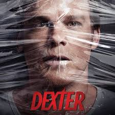

1. Prison Break
.jpg)
Prison Break is an American crime drama television series created by Paul Scheuring for Fox. The series revolves around two brothers: Lincoln Burrows (Dominic Purcell) and Michael Scofield (Wentworth Miller); Lincoln has been sentenced to death for a crime he did not commit, while Michael devises an elaborate plan to help his brother escape prison and clear his name
2. Dexter

Dexter is an American crime drama television series that initially aired on Showtime from October 1, 2006, to September 22, 2013. Set in Miami, the series centers on Dexter Morgan (Michael C. Hall), a forensic technician specializing in bloodstain pattern analysis for the fictional Miami Metro Police Department, who leads a secret parallel life as a vigilante serial killer
3. Home Alone
.jpg)
Home Alone is a 1990 American Christmas comedy film directed by Chris Columbus, and written and produced by John Hughes. The first film in the Home Alone franchise, the film stars Macaulay Culkin as Kevin McCallister, an eight-year-old boy who defends his suburban Chicago home from a home invasion by a pair of robbers after his family accidentally leaves him behind on their Christmas vacation to Paris. The cast also features Joe Pesci, Daniel Stern, John Heard, and Catherine O'Hara.